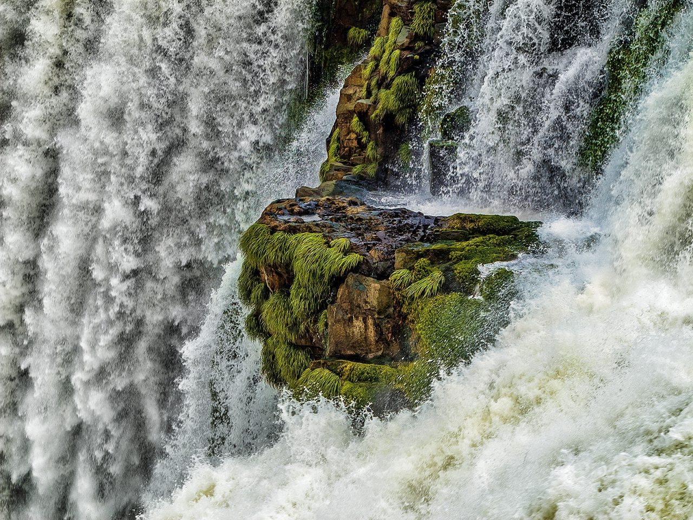
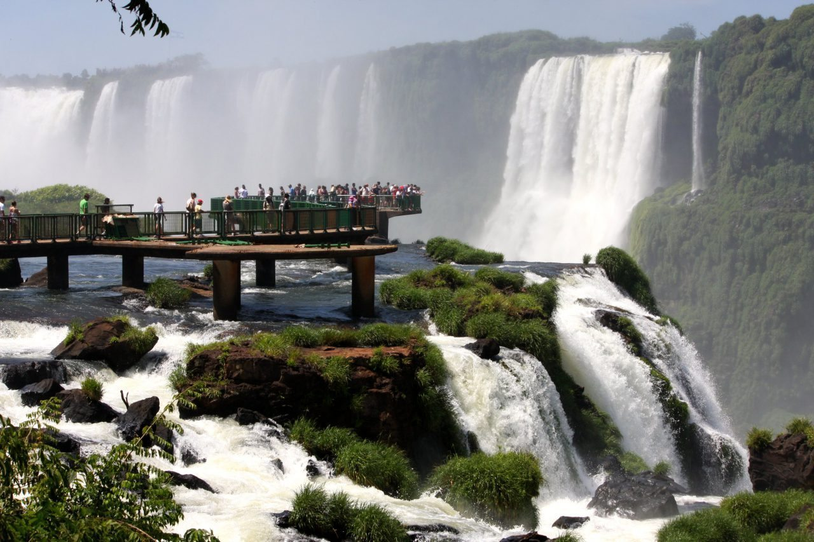

The Iguazu Falls Are More Than The World's Largest Waterfall System

Iguazu Falls Recap
My journey to the Iguazu Falls is woven with the most thrilling story I have to tell. The majestic landscape of the Falls is nearly indescribable. I will do my best here to not only describe the experience I had, but to also convince you to make a visit as soon as possible. The story I will tell is one of a desperate, young (clueless), American backpacker and the most beautiful place with a surprise lurking around every corner. Buckle up, this ride is going to get a little bumpy!
In A Nutshell
Highlights - The Iguazu Falls Park is clean, well-organized, affordable, and unbelievably breathtaking. The border crossings between Brazil, Argentina, and Paraguay give stamps and you can be in all three countries in one day.
Lowlights - Unless you fly to here, you will spend a really long time on a bus or driving. This is way off the beaten path. Also, be careful of those you encounter on the street and officials at the border crossing.
Bottom Line - This is a must visit destination. Just be vigilant in exercising all your traveling best-practices and everything will be great. If you can, stay overnight at the resort inside of the Iguazu Falls Park on the Argentinian side.
Why I Chose To Visit The Iguazu Falls
My visit to the Iguazu Falls came on the 89th day after I arrived in Brazil. Why on this day? Tourist visa rules, that’s why! My plan was to take a quick day trip in to Argentina to see that side of the Iguazu Falls and then come back to Brazil to continue the rest of my 6-month journey around the country. I somehow did not know what to expect about the Iguazu Falls, just that I had received many recommendations to go there. Ultimately, I did make the trip due to this visa situation.
After a 10-hour overnight bus ride from Santa Fé, where I first saw the Milky Way Galaxy, I am rested and ready to experience the next grand natural wonder. What is coming at me in the following hours is a story that shapes the rest of my life.
 Iguazu Falls flowing over green outcrop
Upon Arrival to the Iguazu Falls
Because I arrived and departed in the early morning and evening darkness, it took me a long time to realize that Foz do Iguazu is actually a fairly substantial city. You can easily spend a few days here enjoying nature and hopping across the Friendship Bridge into Paraguay to do some shopping. However, since I just knew to see the waterfalls, that is pretty much all I did. Even this made the time and effort well worth it.
Upon arrival to the bus station, I went to Argentina directly with a taxi. The trip is both fast and cheap. The taxi drivers were all very nice and quite a bit more laissez faire than in other places I have been (I am looking at you, India and Kyrgyzstan!)
A short while later, I smoothly passed through the Argentinian boarder and had new stamps in my passport (this foreshadows what happens later).
The day was a bit rainy and I was visiting in the off-season, so I felt like I had the park to myself. The entry free is scaled depending on what all you want to do during your stay. I opted for free range access to the park’s vast trails, the Falls observatory, and a boat ride under the Falls. Everything was extrodenarially cheap, except for the boat ride, but hey, I have come this far, so I may as well do all the things!
Iguazu Falls Panorama
A Walk Through The Rain Forest
My visit to the Iguazu Falls was unsurprisingly focused on seeing water falling down the side of cliffs. I had just spent a few months in the more northern and tropical parts of Brazil, so on this particularly rainy day I didn’t expect much more than to interact with water.
Then I found the Iguazu rain forest trails.
There are a number of trails winding through the Iguazu Falls Park which are meticulously manicured and often elevated. Anyone with limited mobility will also be able to enjoy these trails as most of them have no stairs.
Without warning, something amazing swooped right in front of me: a toucan! I look up and to my astonishment, there is a whole flock of toucans and a variety of other exotic birds in every shape, size, and color. Some are flying and others are perched on the equally exotic flora of the Iguazu Falls Park. I have never seen such birds even in captivity, so to see so many flourishing in the wild up close has continued to be a life highlight even years later.
A Toucan at Iguazu Falls Park
You could spend days in the Iguazu Falls Park exploring these amazing trails and sights. Each one can be completed in 1-2 hours, so if you have to choose just one, I recommend the Devil’s Throat Trail. This is one of the longer trails, but you also get spectacular views of the Falls while also weaving in and out of the forest. From these vantage points above the Falls, you sense their vastness. The Iguazu Falls are like the Grand Canyon, just wetter!
 Observation Deck at the Iguazu Falls
The official tourism website for the Argentinian side of the Iguazu Falls has great information about all the trails in the Park. Just visit their website and select one of the trails from the main menu. At the bottom of each of those pages is an awesome interactive map like this one. This map is for the Devil’s Throat Trail.
Going Off-Road and Off-Land to the Iguazu Falls
Now on to the main event! Though you can walk down to water’s edge below the Iguazu Falls, I needed to rest after the hiking.
I opted to take the 4X4 off road excursion tour down to the boat docks. It is a short drive, but really cool and I do recommend it. Once at the docks, you can hear the Iguazu Falls and see some mist bellowing from around the distant corner, but you can not see the waterfalls directly.
We receive a boat safety briefing, put on life jackets, load up, and off we go. The boat reminds me a bit of the rubber rafts you see the Navy SEALS using in the movies, but it bigger than that and plenty substantial enough for these waters.
We speed up the river toward the Iguazu Falls, which come more and more into view as we get closer and round the bend. The way that the Iguazu Falls come in to view is spectacular. Just as you think you must be seeing the whole thing, you are proven wrong as the view of this seemingly endless waterfall system becomes less obscured.
The boat came fairly close to the water, close enough for me to feel the choppiness of the water below and for to become quite wet as well. We were provided with ponchos, so the wetness was not too extreme.
We made a few passes by the waterfalls, each time approaching from a different angle providing very different views. The whole boat tour lasts about 30 minutes. Though this is not so much time, it is enough to make the costs worth it and to provide truly amazing memories of the Iguazu Falls.
Iguazu Falls view from below
Dinner, And Then One More Adventure
After this exhausting day of hiking, boating, and getting a bit wet, I satisfied my extreme hunger by devouring a steak at the Sheraton Resort which is inside the Argentinian side of the Iguazu Falls Park. I wish I had the money to get a room there, but just dinner was breaking the bank! It looked like a magnificent place to stay, and the steak is one of the best I have ever had.
One Last Adventure
Now I was out of money, out of energy, and out of time. I had a bus to catch back across the border and I needed to get going or be stranded without a place to stay. I easily caught a cab from the Iguazu Park entrance and as the sunset behind me, I arrived back to the border.
Remember at the top of this post when I said I got my passport stamps? I had received an exit stamp from Brazil and an entry Stamp in to Argentina. The border guard booths are separated by about half a mile, between which you can only drive in one direction. As I departed from Argentina, I was passed on to the Brazilian side without any issue, but upon arriving to the Brazilian booth was told that I had no exit stamp from Argentina. It was true, the Argentinian booth did not give me an exit stamp. Therefor, the Brazilian guard refused to give me entry to Brazil!
I said I would go back and get the stamp but was told it was a one-way road and I was not allowed. Where were in a standoff. After quite some time of debating and arguing the point, the Brazilian official allowed me back into Brazil, but did not give me a stamp. So now, according to my documents, I was illegally in the country.
Great.
Years later, I realize that this was likely a scam to get bribe money. I didn’t get that at the time, nor did I have any money to give anyway. Despite this hiccup, I made it to my bus just on time and soundly slept until arriving to my next destination.
Furthermore, though at the time this passport stamp issue instilled some degree of panic and stress in me, I now realize that this sort of thing simply happens in certain parts of the world, and that the best thing to do is remain calm, stick by your morals, and follow the law. Don’t pay bribes, and if you have to, play stupid. I was stupid, and that helped!
Further Iguazu Falls Resources
Official
-
Iguazu Argentina (official) - The official tourism site for the Argentinian side of the Iguazu Falls.
-
Visit Foz (official) - The official tourism site for the Brazilian city of Foz do Iguazu.
-
Iguazu Falls on WikiTravel - This site is one of the very best resources for travel anywhere! Pair this with the Pocket App (iOS Android) to compile your own awesome offline travel guides!
From around the blogosphere
-
Six Things Nobody Tells You About Iguazu Falls - _by Dani of globetrot_tergirls.com
-
Igauzu Falls Travel Guide & Tips - by Marcello Arrambide of wanderingtrader.com
-
A guide to Iguazu Falls - by Bronwyn Hager on Hosteling International
-
Meine besten Tipps zum Besuch der Iguazu Fälle - by Jörg of backpacker-blog.org
-
Have a post to add to this list? Please contact me.
That’s a Wrap!
I Love The Iguazu Falls and I hope you will go there one day! Have you been there already? Are you planning a trip soon? I would love to hear from you about your plans or experience! Please leave me a comment below, or connect with me directly at @JudsonLMoore. Travel safely! Featured Photo by Marco Aurélio Silva Neto